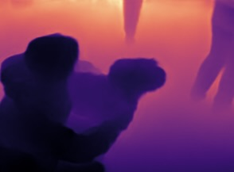

3D Image Mapping for US Central Command (CENTCOM)
This project was done as part of Hacking for Defense (H4D), a program that connects students with the US Department of Defense to solve real world problems.
My challenge was assigned by US Central Command (CENTCOM), and was to create a system that could quickly generate 3D maps of hostile or unknown environments.
My low-budget solution was a program that could generate 3D meshes from a single image, which could be taken from something as simple as a smartphone camera.
Given a photo, the program does a depth estimation to create a depth map. It uses this map to create a point cloud, which is converted into a 3D mesh.
The program is written in Python, a jupyter notebook can be downloaded
here
.

